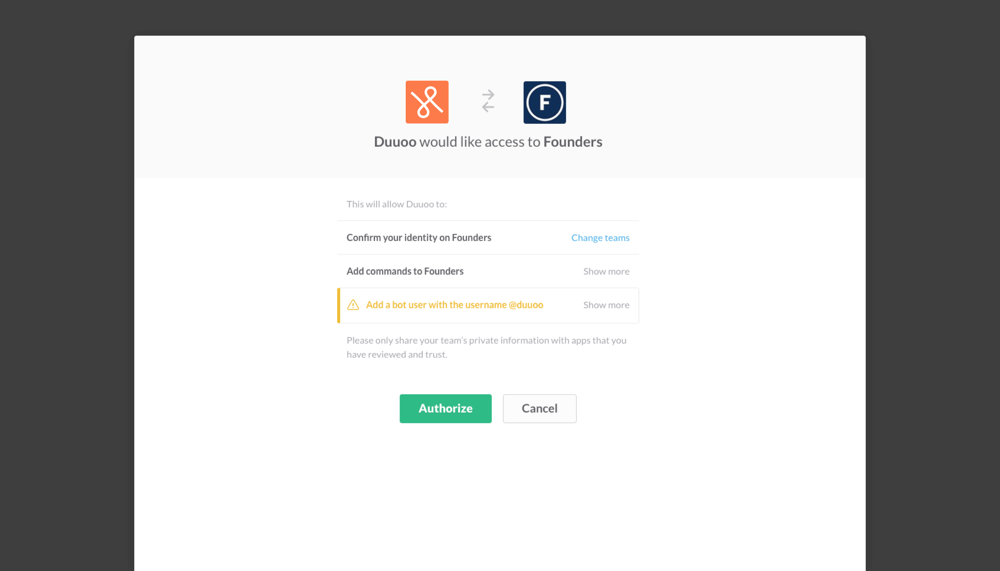
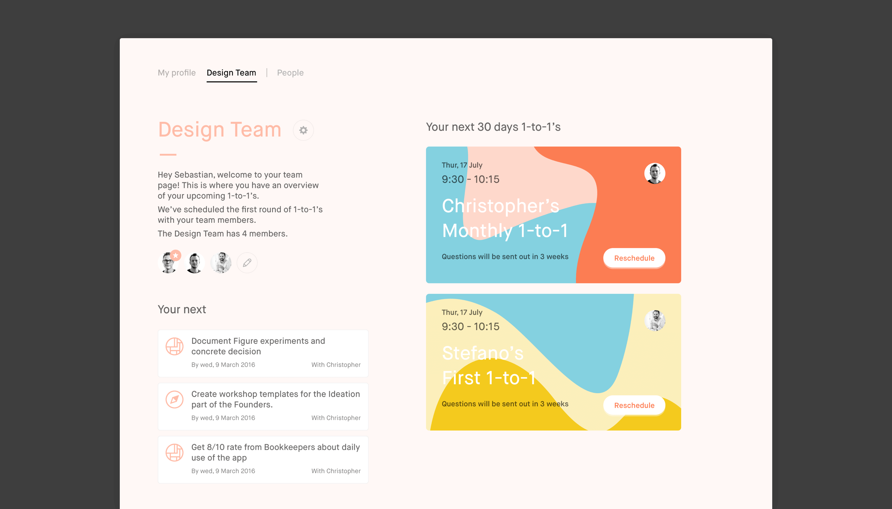
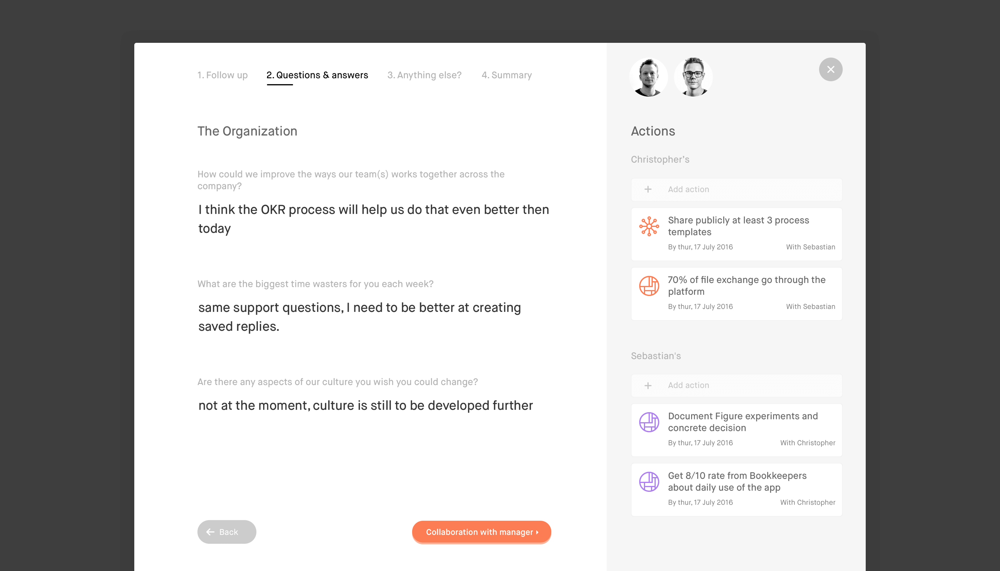
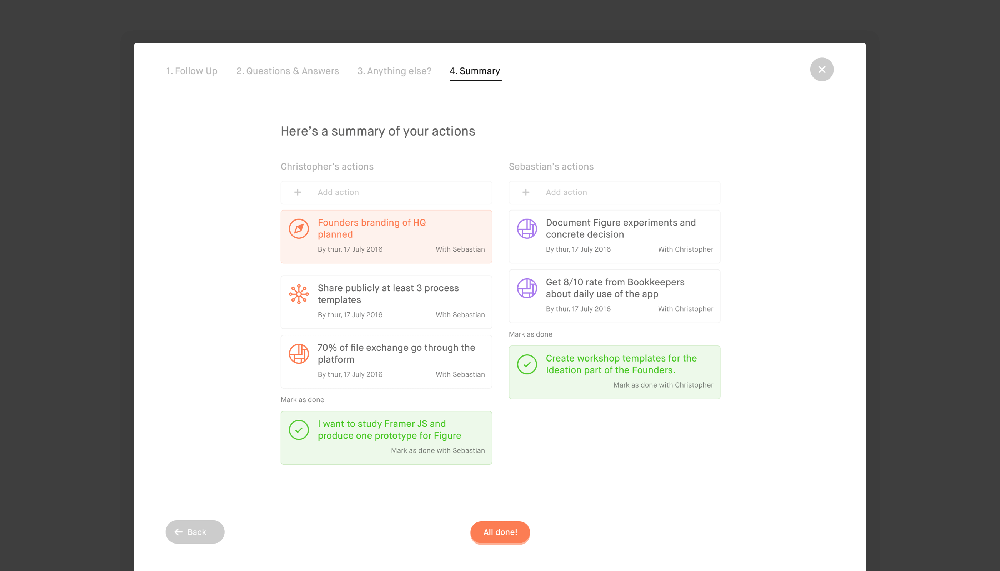
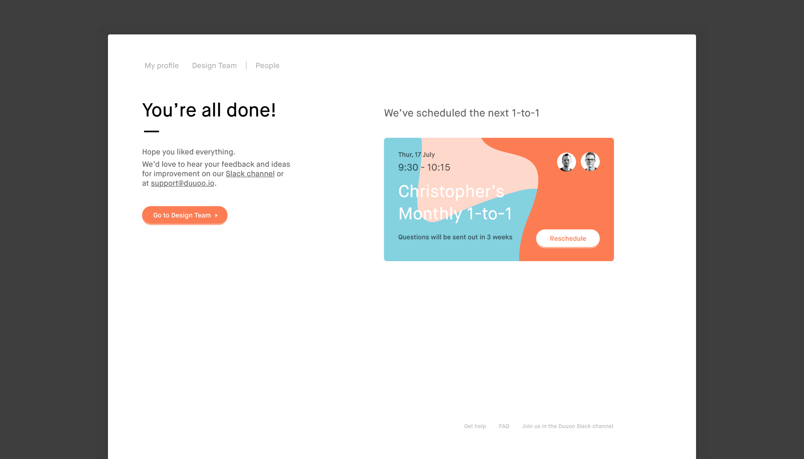

Duuoo is a one-on-one meeting tool that improves relationships between managers and team members.
I helped the team to build their first app and landing page, finding ways to optimize the entire process involved in each 1-on-1. From planning meetings to curating talking points, setting agendas, providing insights about employee needs and driving high accountability, Duuoo ensures that managers never lose track and always stay on top of their team’s operations.
Further, Duuoo enables a level of communication that goes beyond day-to-day operational concerns, building trust and understanding between team members and their managers.

Slack and Duuoo work hand-in-hand, so you can onboard seamlessly and avoid missed communication between co-workers.


Managers are the core audience of Duuoo, as they are part of both management problems and their solutions.

With Duuoo, managers run 1-on-1 meetings with each member of their team. For each 1-on-1, managers receive a set of meeting preparation questions written by the Duuoo team that they can edit and forward to team members.

A few days before their 1-on-1, team members and managers can prepare for their meeting by reviewing the team member’s responses.

Each 1-on-1 starts with a review of past 1-on-1 agreements. Once reviewed, agreements can be checked off or retained for the next review.

While seated in the same room or virtually on the same call, both parties review questions and answers. They can then add new mutual or individual agreements.


Once the conversation is complete, the 1-on-1 concludes with both parties scheduling their next session.
